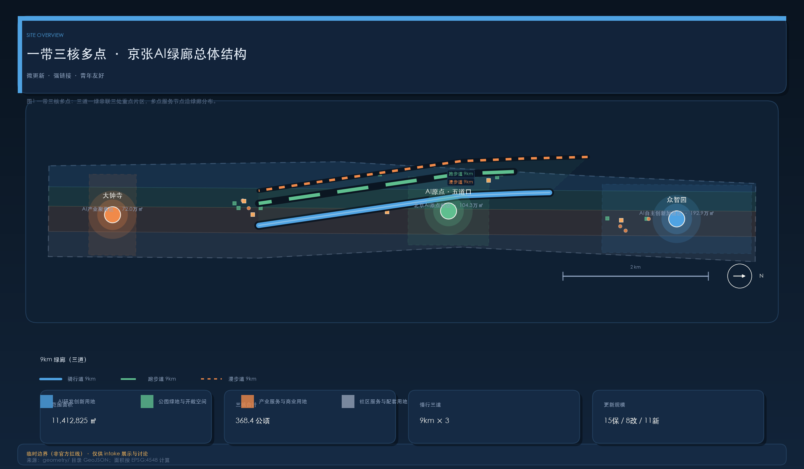
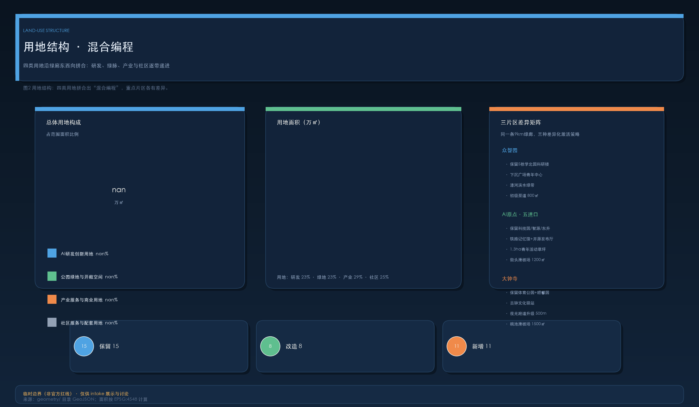
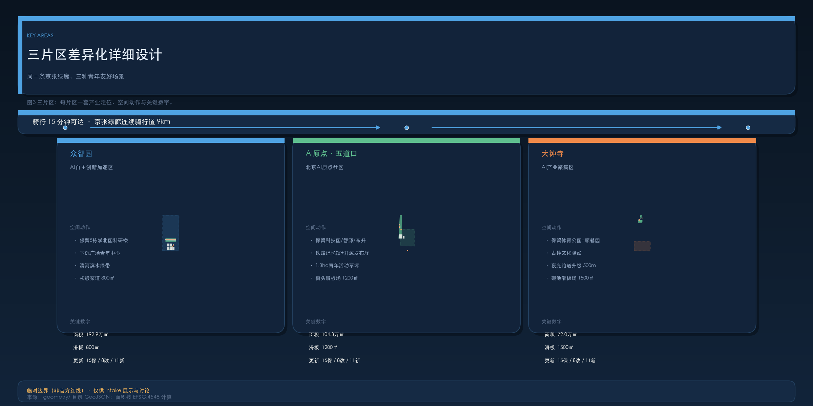
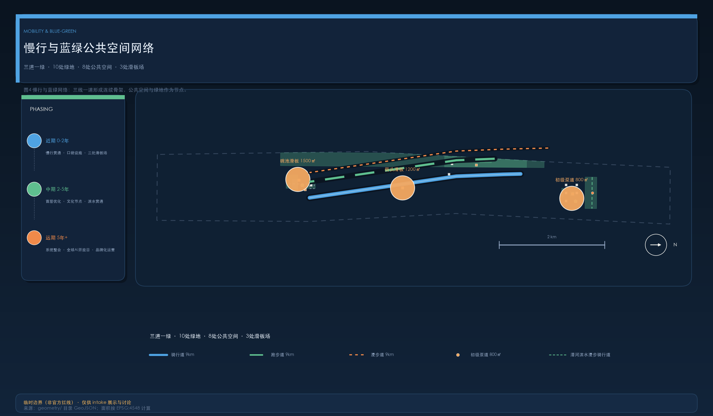
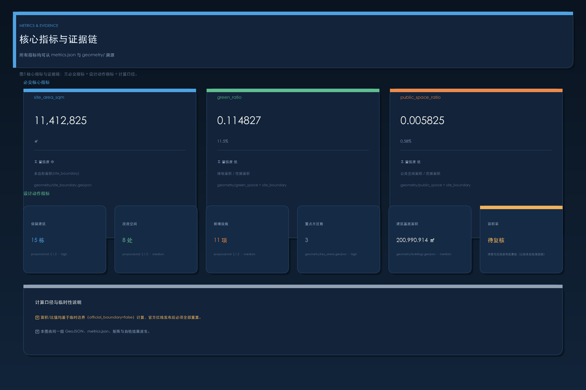

统筹研究范围
43.6 ㎞²
面向全范围提出 AI 产业生态、三区两翼协同、未来城市形态与文化叙事。
离线电子展示成果，权威数据仍以 GeoJSON、metrics.json、矩阵与自检结果为准。本页把 总览地图、三层范围、重点区域、用地分区、交通慢行、蓝绿公共空间、建筑与更新项目、AI 场景、核心指标、任务覆盖、自检状态、来源与假设，转成人类可读的视觉说明。
总览地图把用地分区、交通慢行、蓝绿公共空间、建筑与更新项目、AI 场景节点放在同一张证据图中，便于快速理解"一带三核多点"的空间主线。
方案按统筹研究范围、总体设计范围、重点区域范围递进，把产业判断、城市更新与重点片区设计绑定到图层与指标。
面向全范围提出 AI 产业生态、三区两翼协同、未来城市形态与文化叙事。
组织城市更新、用地结构、交通市政与京张遗址公园活力带；含 19 项更新项目与 9km 蓝绿慢行系统。
三处重点片区详细设计：功能业态、建筑更新、公共空间与交通组织。
三处重点片区各有产业定位、空间策略、建筑与公共空间动作、交通接口与实施风险说明。
花园型自主创新街区。保留 5 栋学北园科研楼，首层灰空间优化；新增下沉广场青年中心、清河滨水绿带、初级泵道 800㎡。
近校型成果转化街区。保留清华科技园/智源大厦/东升大厦；新增铁路记忆科创互动馆、开源社区发布厅、1.3ha 青年草坪、街头滑板 1200㎡。
城市型智能经济街区。保留体育公园+顺馨园；新增古钟文化驿站、碗池滑板 1500㎡；500m 环形跑道夜光升级。
四类用地沿绿廊东西向拼合，研发、绿脉、产业与社区逐带递进，构成"混合编程"。
267 万㎡ · 科研办公楼群与下沉广场
259 万㎡ · 京张绿廊与滨水绿带
337 万㎡ · 孵化器与商业配套
278 万㎡ · 社区服务与生活配套
"三道一绿" 9km 慢行系统：骑行、跑步、漫步三线并行，串联三处重点片区，骑行 15 分钟可达。
京张绿廊连续骑行道（ROAD-CYCLE-01），东西向贯通三片区；连接道含清河滨水骑行道、荷清园连接道、体育公园-顺馨园串联道。
京张绿廊连续跑步道（ROAD-RUN-01）；大钟寺体育公园 500m 环形跑道（保留）升级夜光计时。
京张绿廊漫步道（ROAD-WALK-01），沿线设置起跑集结区、宠物友好区与市集草坪。
10 处绿地与 8 处公共空间构成蓝绿骨架；三处滑板场（800 / 1200 / 1500㎡）沿绿廊形成青年极限运动网络。
遗址公园绿廊、清河滨水带、青年活动草坪、荷清园、体育公园、顺馨园等。
下沉生态广场、空中花园、滨水步道、露营市集草坪、宠物友好区等。
平缓起伏沥青泵道，新手友好；配套滑板场服务亭。
深度 1.2–2.0m 碗池，承载极限运动联赛总决赛。
微更新导向：保留 15、改造 8、新增 11，覆盖建筑首层、屋顶花园、文化节点与口袋设施，分三期实施。
学北园 A-E 科研楼、清华科技园主楼群、智源大厦、东升大厦、体育公园服务中心等。
众智园 5 栋首层灰空间优化、清华科技园首层开放界面、东升大厦首层商业激活、大钟寺夜光跑道升级。
铁路记忆科创互动馆、开源社区发布厅、古钟文化驿站、下沉广场青年中心、青年草坪服务站、滑板场服务亭等 6 栋轻量建筑 + 5 处附属设施。
本方案原创证据图（深色科技感，双语），均可从 geometry/ 与 metrics.json 溯源。





10 张真实 AI 场景卡（proposal.md §5.5），每张标明片区、空间载体、AI 支撑、数据来源、隐私边界、人工复核与运营主体，并配套 DPIA Checklist。
3 处智能体测站（端侧姿态分析）+ 每 500m 起跑集结区 + 企业跑团匹配。
代码实时投屏墙 + AI 辅助代码审查（本地部署）+ 1.3ha 青年草坪扩展区。
半场篮球 + 羽毛球划线 + 瑜伽拉伸区 + 下沉广场阶梯坐席观赛。
200㎡ 半室外构筑物 + 阶梯坐席 100–150 座 + 匿名投票推荐片单。
Web AR（免下载）+ 科创互动馆 300㎡ + 沿线 10 处 AR 触发点。
三片区宠物区（600/500/500㎡）+ 10–20 个摊位 + 健康快检站。
800/1200/1500㎡ 三场地 15 分钟骑行可达，AI 辅助评分（人工裁决为准）。
蓄光涂层 + RFID 计时芯片 + 智能体测站×2 + 可移动看台。
AI 互动钟声即兴伴奏（骨传导输出）+ 编钟数字孪生 + 声景采集。
7 个核心展示节点 + 多语种 AI 导览 + 端侧算力节点与临时网络。
compliance_matrix.json 覆盖公告 1.3/1.4/1.5 与 agent.1–agent.6；standard_matrix.json 与 design_depth_matrix.json 证明专业标准与成果深度。
六类 agent 任务全部覆盖：产业判断、城市更新、交通慢行、蓝绿生态、重点片区详细设计与实施运营；三区两翼协同与京张文化叙事贯穿始终。
专业评审按目标契合度、品牌识别度、区域协同性、规划创新性、场景可感知度、空间明确性、可转化性、表达完整性、公开合规性、国际传播力与长期运营价值逐项对标。
确定性校验、空间评审、可视化封装与专业证据评审四层自检；本页与报告、manifest、self_check 保持同步。
本页不加载 CDN、远程地图瓦片、外部脚本、外部字体、API 请求或 iframe。
来源证据分类台账与数据缺口假设清单，解释对设计结论的影响。
来源见 sources.json、agent_taskbook.json、data/processed/agent_fact_pack.md 与 standards/references，共 13 条登记来源（含 7 项正式来源）。⚠ 大部分国际案例数据与场地统计为 AI 基于公开数据推断，正式证据 URL、发布方、日期与交叉核验待补。
待补控规、道路红线、权属、市政、文保与工程条件在 assumptions.json 中列明并解释对设计结论的影响。⚠ 官方 SITE_BOUNDARY 与 KEY_AREA 多边形未发布，所有面积与比值指标须在官方几何发布后重算。